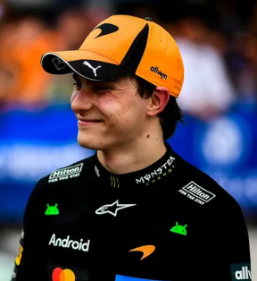

Oscar Piastri
Oscar Piastri
Team: McLaren
Team Principal: Andrea Stella
Number: 81
Nationality: Australia
Debut: 2023
Born: 6 April 2001
History: Australian driver Oscar Piastri quickly established himself as one of Formula 1’s most naturally gifted talents following dominant junior-category success. After winning championships in Formula Renault, Formula 3, and Formula 2, Piastri adapted immediately to the demands of Formula 1 with McLaren. Renowned for his calm personality, race intelligence, and exceptional consistency, he rapidly became a regular podium and race-winning contender. By 2026, Piastri was widely viewed as one of the future faces of the sport and a crucial part of McLaren’s championship ambitions.
